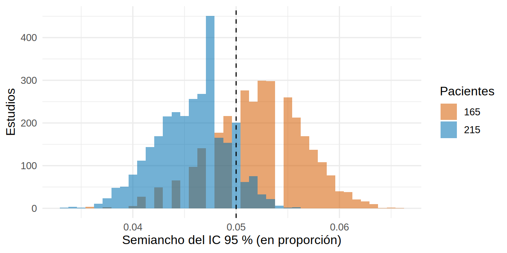

library(tidyverse)
source("R/funciones_extra_a.R") # num(), pct()
source("R/funciones_cap20.R")
theme_set(theme_minimal(base_size = 12))
eca <- read_csv("Bases/eca_bicarbonato.csv", show_col_types = FALSE) # piloto SIMULADO (Cap. 11), valores basales
dx <- read_csv("Bases/dx_lra.csv", show_col_types = FALSE) # biomarcador y LRA, SIMULADO (Cap. 16)Tamaño de muestra por precisión: prevalencias, medias y pruebas diagnósticas
Nota🩺 Escenario
Tu servicio quiere saber qué proporción de pacientes con ERC avanzada tiene acidosis metabólica franca para decidir si vale la pena un programa de tamizaje, y además evaluar si un biomarcador urinario detecta la lesión renal aguda al ingreso. Aquí no hay dos grupos que comparar ni un efecto que detectar: no tiene sentido hablar de potencia. Lo que importa es qué tan preciso será el número que publiques: «la prevalencia es de 13 %, con un IC de ±5 puntos». Se calcula el tamaño de muestra para un ancho de intervalo que tú fijas.
Lo que vamos a hacer
- Calcular n para estimar una proporción (prevalencia) y una media con un IC de ancho objetivo, y verificarlo por simulación.
- Calcular n para estimar la sensibilidad y la especificidad de una prueba diagnóstica, y ver el papel de la prevalencia.
- Ubicar los estudios de predicción (enlace a 17.1) y los de comparación en el mismo marco.
Paso 1: una prevalencia con un ancho objetivo
El IC 95 % de una proporción p con n pacientes tiene un semiancho \(d \approx z_{1-\alpha/2}\sqrt{p(1-p)/n}\). Despejando n:
\[ n = \frac{z_{1-\alpha/2}^2\; p\,(1-p)}{d^2} \]
Necesitas una idea de p (la que vas a estimar) y fijar d, el margen de error que toleras. Si no tienes idea de p, usa 0.5: es el valor que da el n más grande, y por tanto el más seguro. Para la acidosis franca (bicarbonato < 18 mmol/L), el piloto simulado da una prevalencia aproximada:
# A tibble: 2 × 3
supuesto p n
<chr> <dbl> <dbl>
1 Con la prevalencia del piloto 0.122 165
2 Conservador (p = 0.5) 0.5 385Qué vemos. Con la prevalencia del piloto (12 %) hacen falta 165 pacientes para un IC de ±5 puntos; sin información previa (p = 0.5), 385. La variabilidad de una proporción es máxima en 0.5 y se reduce hacia los extremos. Y el margen manda: la precisión cuesta cuadrado inverso, igual que el efecto en 20.2.
expand_grid(p = c(0.05, 0.10, 0.20, 0.30, 0.50), d = c(0.03, 0.05, 0.10)) |>
mutate(n = n_prec_prop(p, d)) |>
pivot_wider(names_from = d, values_from = n, names_prefix = "d = ")# A tibble: 5 × 4
p `d = 0.03` `d = 0.05` `d = 0.1`
<dbl> <dbl> <dbl> <dbl>
1 0.05 203 73 19
2 0.1 385 139 35
3 0.2 683 246 62
4 0.3 897 323 81
5 0.5 1068 385 97Si la población es finita y pequeña (por ejemplo, los 1 200 pacientes del registro de tu hospital), la corrección es \(n' = n/(1 + (n-1)/N)\):
c(infinita = n_prec_prop(p_acidosis, d), registro_de_1200 = n_prec_prop(p_acidosis, d, N = 1200)) infinita registro_de_1200
165 145 Con una muestra por conglomerados (unidades, comunidades), multiplica además por el efecto de diseño de 20.4 y 6.2.
¿Se cumple el ancho? Verificación por simulación
La fórmula usa una aproximación (Wald). Probemos con intervalos exactos (Clopper-Pearson, binom.test): simulamos 3 000 estudios de n pacientes con una prevalencia verdadera de 12 % y medimos el semiancho de cada intervalo:
simular_ic <- function(n, p, d, R = 3000, semilla = 3) {
set.seed(semilla)
ic <- sapply(rbinom(R, n, p), \(x) binom.test(x, n)$conf.int) # IC exacto de cada estudio
hw <- (ic[2, ] - ic[1, ]) / 2
tibble(n = n, semiancho_medio = mean(hw), cobertura = mean(ic[1, ] <= p & p <= ic[2, ]),
prob_ancho_ok = mean(hw <= d))
}
n0 <- n_prec_prop(p_acidosis, d)
tabla_sim <- bind_rows(simular_ic(n0, p_acidosis, d),
simular_ic(ceiling(1.15 * n0), p_acidosis, d),
simular_ic(ceiling(1.30 * n0), p_acidosis, d))
tabla_sim |> mutate(across(where(is.numeric) & !n, \(x) round(x, 3)))# A tibble: 3 × 4
n semiancho_medio cobertura prob_ancho_ok
<dbl> <dbl> <dbl> <dbl>
1 165 0.053 0.97 0.261
2 190 0.049 0.954 0.621
3 215 0.046 0.964 0.9 Qué vemos. Con n = 165, el semiancho medio del IC exacto es 0.053 (objetivo 0.050) y la cobertura es 97.0 %: la fórmula de Wald queda ligeramente corta porque el intervalo exacto es algo más ancho (y conservador). Además, solo en 26 % de los estudios el semiancho real queda por debajo de 0.05, porque el ancho cambia con el p que sale en cada muestra (figura). Si quieres tener casi garantizado que el IC no exceda el margen, aumenta el n: con un 30 % más (215), la probabilidad sube a 90 %. Eso se conoce como calcular con garantía (assurance) del ancho.
anchos <- map_dfr(c(n0, ceiling(1.30 * n0)), \(tam) {
set.seed(3)
hw <- sapply(rbinom(3000, tam, p_acidosis), \(x) diff(binom.test(x, tam)$conf.int) / 2)
tibble(n = factor(tam), semiancho = hw)
})
ggplot(anchos, aes(semiancho, fill = n)) +
geom_histogram(position = "identity", alpha = 0.55, bins = 40) +
geom_vline(xintercept = d, linetype = "dashed") +
scale_fill_manual(values = c("#D55E00", "#0072B2"), name = "Pacientes") +
labs(x = "Semiancho del IC 95 % (en proporción)", y = "Estudios")
Paso 2: una media con un ancho objetivo
Para estimar un promedio (por ejemplo, la TFGe media de los pacientes que atiendes) con semiancho d: \(n = (z\,\sigma/d)^2\). La DE (σ) se toma de un estudio previo; usamos la del piloto:
# A tibble: 3 × 2
d n
<dbl> <dbl>
1 0.5 536
2 1 134
3 2 34 n semiancho_medio prob_ancho_ok
134.000 1.006 0.471 Qué vemos. Con σ = 5.9, estimar la TFGe media con ±1 mL/min/1.73 m² requiere 134 pacientes. El semiancho medio simulado es 1.01 (la t es un poco más ancha que la normal) y solo en 47 % de los estudios no pasa de 1: de nuevo, la fórmula da el ancho esperado, no una garantía. La precisión depende de σ, que es el parámetro que peor conoces: planifica con un σ algo mayor.
Paso 3: sensibilidad y especificidad de una prueba
Para evaluar una prueba diagnóstica lo que importa es la precisión de la sensibilidad (Se) y la especificidad (Sp). Cada una es una proporción, pero se estima en un subgrupo distinto: la sensibilidad solo con los enfermos, la especificidad solo con los sanos. Por eso la prevalencia decide cuántos pacientes totales necesitas: si hay pocos enfermos, hay que reclutar muchos para reunir los casos que exige la sensibilidad.
Partimos de lo que mostró el biomarcador en la base simulada de LRA, con un punto de corte de 150 ng/mL:
sensibilidad especificidad prevalencia
0.704 0.852 0.168 Planificamos un estudio de validación con IC de ±7 puntos para ambas:
d_dx <- 0.07
plan_dx <- n_sens_esp(se, sp, prev, d_dx)
plan_dx# A tibble: 1 × 5
enfermos_necesarios sanos_necesarios total_por_sens total_por_esp total
<dbl> <dbl> <dbl> <dbl> <dbl>
1 164 99 980 119 980Qué vemos. Hacen falta 164 enfermos para la sensibilidad (70 %) y 99 sanos para la especificidad (85 %). Con una prevalencia de 17 %, los enfermos son la parte difícil: para reunir 164 hay que reclutar 980 pacientes (para los sanos bastarían 119). Manda el mayor: 980. Si la prevalencia fuera de 40 % (una población de mayor riesgo, como la de UCI), serían 410.
Verifiquemos con simulación: reclutamos 980 pacientes consecutivos (el número de enfermos varía por azar) y calculamos los IC exactos de Se y Sp:
set.seed(6)
res_dx <- map_dfr(1:2000, \(i) {
enf <- rbinom(1, plan_dx$total, prev); san <- plan_dx$total - enf # casos que salieron en este estudio
ci_se <- binom.test(rbinom(1, enf, se), enf)$conf.int
ci_sp <- binom.test(rbinom(1, san, sp), san)$conf.int
tibble(enf = enf, hw_se = diff(ci_se) / 2, hw_sp = diff(ci_sp) / 2)
})
res_dx |> summarise(enfermos_medios = mean(enf), semiancho_se = mean(hw_se), semiancho_sp = mean(hw_sp),
prob_ambos_ok = mean(hw_se <= d_dx & hw_sp <= d_dx)) |> mutate(across(everything(), \(x) round(x, 3)))# A tibble: 1 × 4
enfermos_medios semiancho_se semiancho_sp prob_ambos_ok
<dbl> <dbl> <dbl> <dbl>
1 164. 0.072 0.025 0.27El estudio reúne en promedio 164 enfermos, el semiancho medio de la sensibilidad es 0.072 (objetivo 0.07) y el de la especificidad 0.025, mucho menor que el objetivo porque sobran sanos. Pero solo en 27 % de los estudios ambos intervalos cumplen el objetivo: de nuevo, el ancho de la fórmula es un promedio y, para la garantía, hace falta algo de margen. Una solución habitual es muestrear por estado de la enfermedad (reclutar hasta tener, por ejemplo, 120 enfermos y 120 sanos, como en un diseño de casos y controles), si el diseño lo permite.
Paso 4: dos situaciones que ya conoces
- Modelos de predicción. Para construir una calculadora de riesgo el tamaño de muestra no se calcula con la precisión de una proporción, sino con los criterios de Riley (encogimiento, optimismo y precisión del riesgo global), que dependen de los eventos y del número de parámetros. Está desarrollado en 17.1 y no lo repetimos aquí.
- Comparar dos grupos con un IC estrecho. Es la misma lógica: el semiancho del IC de una diferencia de medias es \(d = z\,\sigma\sqrt{2/n}\). Con σ = 2.6 y un semiancho de 0.5 mL/min/1.73 m², hacen falta 208 pacientes por grupo, bastante más que los 108 de 20.2: pedir un IC estrecho exige más que pedir potencia para detectar un efecto de 1.0.
Trampas frecuentes
Advertencia⚠️ Errores frecuentes con la precisión
- Usar la fórmula de la proporción con p muy cercano a 0 o 1. Con prevalencias muy bajas (< 5 %), Wald puede funcionar mal; usa intervalos exactos o de Wilson y verifica por simulación como en el Paso 1.
- Calcular el total por la menor de las dos proporciones. En pruebas diagnósticas, el tamaño total es el mayor de los dos (el de la sensibilidad o el de la especificidad), según la prevalencia.
- Prometer un margen sin una σ o una p defendible. Cita de dónde sale el valor y calcula para un rango.
Importante🎯 En resumen
- En estudios descriptivos no se calcula potencia: se fija un margen de error d y se calcula n = z² p(1 − p)/d² (proporción) o (zσ/d)² (media).
- Si no conoces p, usa 0.5 (el n más grande: 385 para ±5 puntos). Con la prevalencia del piloto (12 %), 165.
- El ancho de la fórmula es un promedio: con ese n, solo 26 % de los estudios cumplen el ancho; con un 30 % más, 90 %.
- En pruebas diagnósticas, la sensibilidad se estima con los enfermos y la especificidad con los sanos; la prevalencia convierte eso en pacientes totales (980 frente a 410 si la prevalencia fuera 40 %).
- Para modelos de predicción, usa 17.1 (criterios de Riley).
Ejercicio
- ¿Cuántos pacientes necesitas para estimar la prevalencia de acidosis franca con ±3 puntos, si esperas una prevalencia de 13 %? ¿Y si no tienes idea de la prevalencia?
- Para la prueba diagnóstica con Se = 0.80 y Sp = 0.90, prevalencia de 20 % y un semiancho de ±0.05, calcula el tamaño total con
n_sens_esp(). ¿Cuál de las dos, Se o Sp, determina el total? - Usa
simular_ic()para comprobar si con la n del ejercicio 1 el semiancho medio del IC exacto es 0.03.